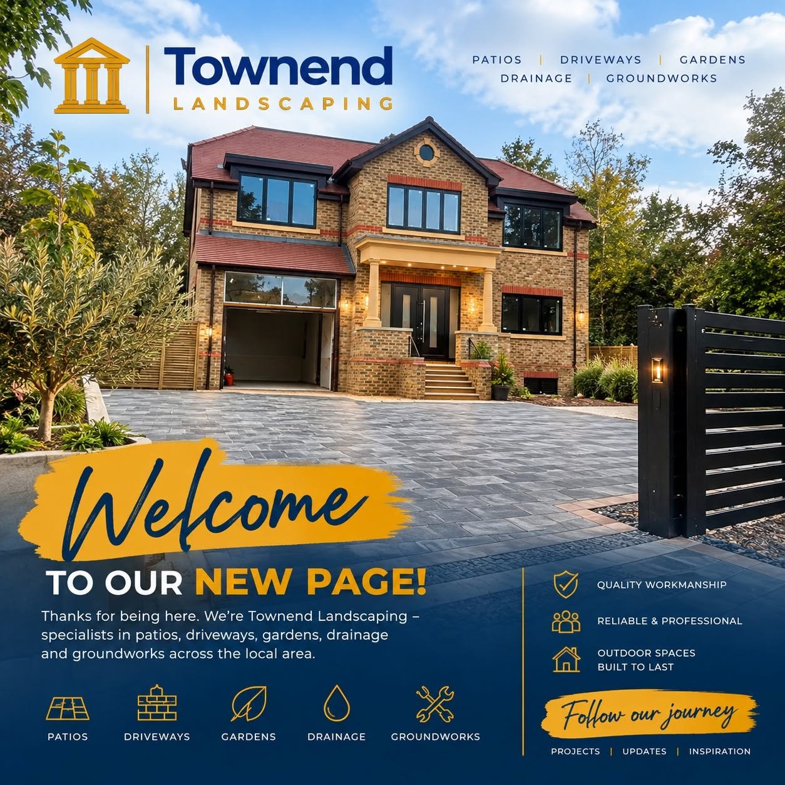
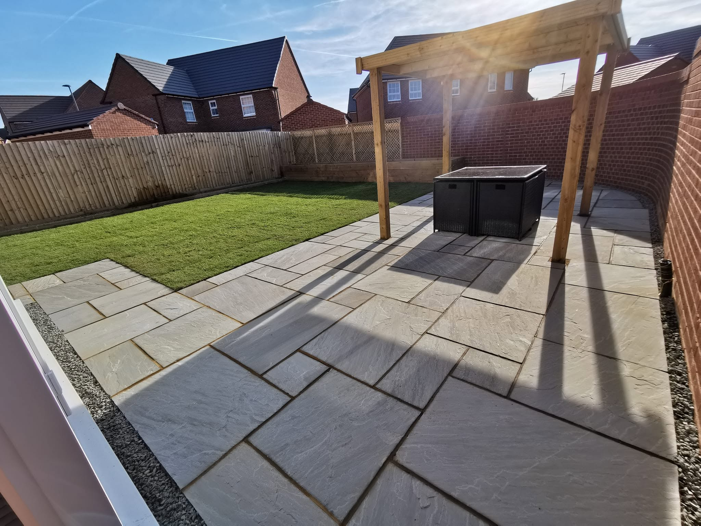
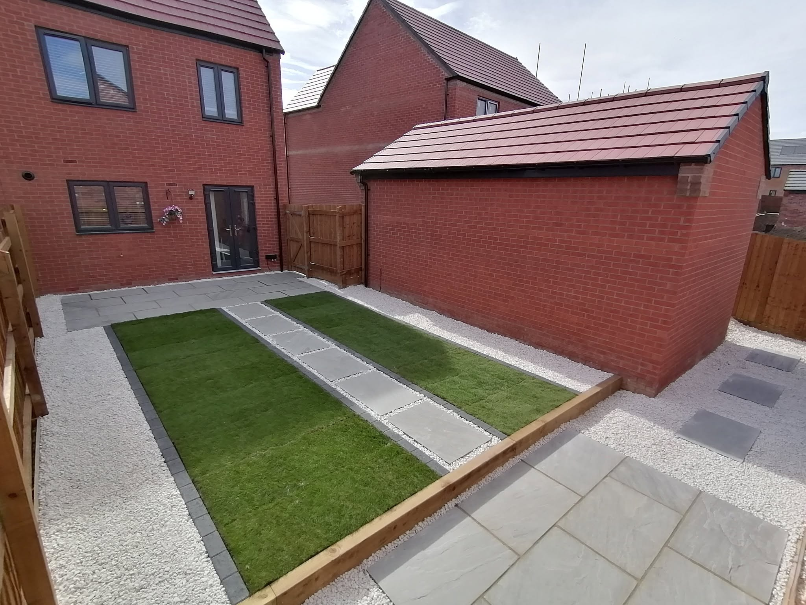
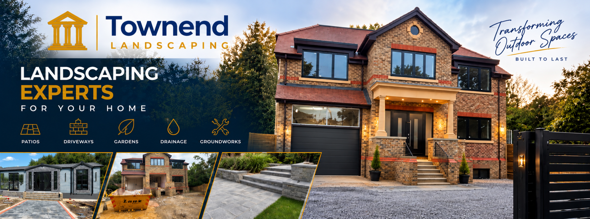

Outdoor spaces built to last.
Patios, driveways, gardens, drainage and groundworks for local homeowners — designed around your property and finished with care.
More than a garden. A space made for your home.
From a new patio for summer evenings to a complete driveway or garden transformation, Townend Landscaping brings the key parts of an outdoor project together under one name.

Built from the ground up.
Five core services covering the spaces around your home, from preparation and drainage through to the finished surface.

Patios & Paving
Practical, attractive outdoor areas for dining, relaxing and making more of your garden.

Driveways
Smart, hard-wearing entrances designed to complement your home and everyday use.

Gardens
Outdoor transformations that give your garden structure, usability and a clean finish.

Drainage
Drainage solutions incorporated into landscaping and ground preparation where required.

Groundworks
Preparation and groundwork forming the foundation for a properly finished outdoor project.
Complete Outdoor Projects
Bring the different elements of your outside space together with one cohesive design.

From first ideas to the finished space.
Good landscaping is about more than the final surface. The layout, preparation, levels and drainage all matter. We focus the website around the full project rather than treating each service in isolation.
Spaces that change how a home feels.
A strong finish starts with the right preparation and a layout that works with the property.
A straightforward route to a better outdoor space.
Tell us what you need
Share the space, the work you have in mind and what you want the finished area to do.
Plan the project
The job can be considered around layout, preparation, drainage and the chosen finish.
Prepare the ground
Good groundwork gives patios, driveways and landscaping the foundation they need.
Finish the space
The final surfaces and details bring the whole outdoor area together.
Thinking about a new patio, driveway or garden project?
Townend Landscaping is based in Wraysbury. Get in touch to discuss what you want to change around your home.